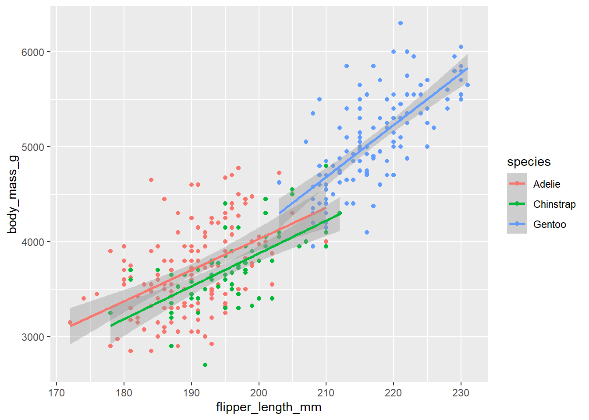
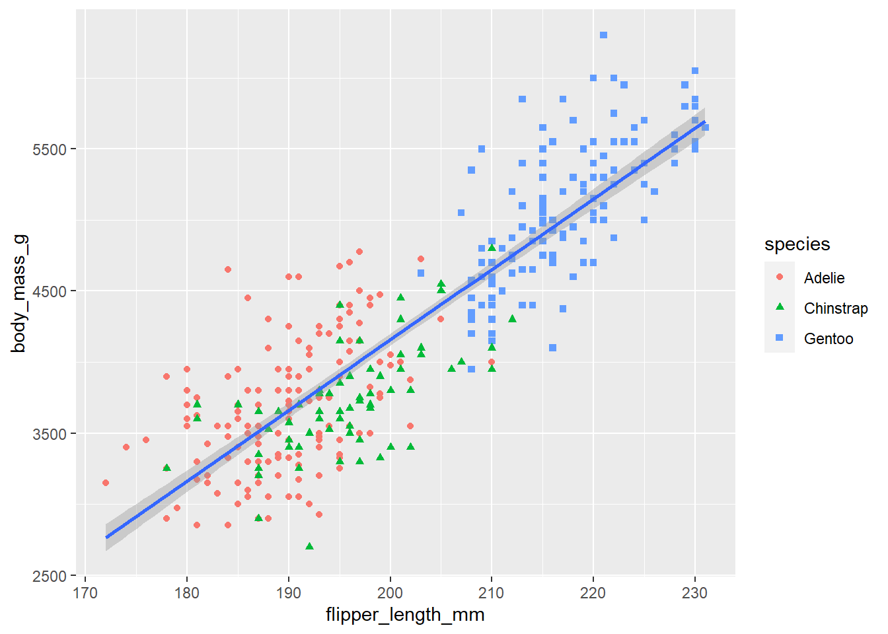

library(tidyverse)
#> ── Attaching core tidyverse packages ───────────────────── tidyverse 2.0.0 ──
#> ✔ dplyr 1.1.3 ✔ readr 2.1.4
#> ✔ forcats 1.0.0 ✔ stringr 1.5.0
#> ✔ ggplot2 3.4.4 ✔ tibble 3.2.1
#> ✔ lubridate 1.9.3 ✔ tidyr 1.3.0
#> ✔ purrr 1.0.2
#> ── Conflicts ─────────────────────────────────────── tidyverse_conflicts() ──
#> ✖ dplyr::filter() masks stats::filter()
#> ✖ dplyr::lag() masks stats::lag()
#> ℹ Use the conflicted package (<http://conflicted.r-lib.org/>) to force all conflicts to become errorsTopik 2 Visualisasi
Bab ini berfokus pada ggplot2, salah satu paket inti dalam tidyverse. Untuk mengakses himpunan data, halaman bantuan, dan fungsi yang digunakan dalam bab ini, muat tidyverse dengan menjalankan:
1.1 Apa yang akan Anda pelajari
Ilmu data adalah bidang yang luas, dan tidak mungkin Anda bisa menguasai semuanya dengan membaca satu buku. Buku ini bertujuan untuk memberi Anda dasar yang kuat dalam alat yang paling penting dan pengetahuan yang cukup untuk menemukan sumber daya untuk belajar lebih banyak bila diperlukan. Model langkah-langkah proyek ilmu data tipikal kami terlihat seperti Gambar 1.1
4.1.1 Extracting Data
Anda dapat menginstal tidyverse lengkap dengan satu baris kode :
install.packages("tidyverse")
library(tidyverse)library(palmerpenguins)
library(ggthemes)penguins# A tibble: 344 × 8
species island bill_length_mm bill_depth_mm flipper_length_mm body_mass_g
<fct> <fct> <dbl> <dbl> <int> <int>
1 Adelie Torgersen 39.1 18.7 181 3750
2 Adelie Torgersen 39.5 17.4 186 3800
3 Adelie Torgersen 40.3 18 195 3250
4 Adelie Torgersen NA NA NA NA
5 Adelie Torgersen 36.7 19.3 193 3450
6 Adelie Torgersen 39.3 20.6 190 3650
7 Adelie Torgersen 38.9 17.8 181 3625
8 Adelie Torgersen 39.2 19.6 195 4675
9 Adelie Torgersen 34.1 18.1 193 3475
10 Adelie Torgersen 42 20.2 190 4250
# ℹ 334 more rows
# ℹ 2 more variables: sex <fct>, year <int>#> # A tibble: 344 × 8
#> species island bill_length_mm bill_depth_mm flipper_length_mm
#> <fct> <fct> <dbl> <dbl> <int>
#> 1 Adelie Torgersen 39.1 18.7 181
#> 2 Adelie Torgersen 39.5 17.4 186
#> 3 Adelie Torgersen 40.3 18 195
#> 4 Adelie Torgersen NA NA NA
#> 5 Adelie Torgersen 36.7 19.3 193
#> 6 Adelie Torgersen 39.3 20.6 190
#> # ℹ 338 more rows
#> # ℹ 3 more variables: body_mass_g <int>, sex <fct>, year <int>glimpse(penguins)Rows: 344
Columns: 8
$ species <fct> Adelie, Adelie, Adelie, Adelie, Adelie, Adelie, Adel…
$ island <fct> Torgersen, Torgersen, Torgersen, Torgersen, Torgerse…
$ bill_length_mm <dbl> 39.1, 39.5, 40.3, NA, 36.7, 39.3, 38.9, 39.2, 34.1, …
$ bill_depth_mm <dbl> 18.7, 17.4, 18.0, NA, 19.3, 20.6, 17.8, 19.6, 18.1, …
$ flipper_length_mm <int> 181, 186, 195, NA, 193, 190, 181, 195, 193, 190, 186…
$ body_mass_g <int> 3750, 3800, 3250, NA, 3450, 3650, 3625, 4675, 3475, …
$ sex <fct> male, female, female, NA, female, male, female, male…
$ year <int> 2007, 2007, 2007, 2007, 2007, 2007, 2007, 2007, 2007…#> Rows: 344
#> Columns: 8
#> $ species <fct> Adelie, Adelie, Adelie, Adelie, Adelie, Adelie, A…
#> $ island <fct> Torgersen, Torgersen, Torgersen, Torgersen, Torge…
#> $ bill_length_mm <dbl> 39.1, 39.5, 40.3, NA, 36.7, 39.3, 38.9, 39.2, 34.…
#> $ bill_depth_mm <dbl> 18.7, 17.4, 18.0, NA, 19.3, 20.6, 17.8, 19.6, 18.…
#> $ flipper_length_mm <int> 181, 186, 195, NA, 193, 190, 181, 195, 193, 190, …
#> $ body_mass_g <int> 3750, 3800, 3250, NA, 3450, 3650, 3625, 4675, 347…
#> $ sex <fct> male, female, female, NA, female, male, female, m…
#> $ year <int> 2007, 2007, 2007, 2007, 2007, 2007, 2007, 2007, 2…ggplot(data = penguins)
ggplot(
data = penguins,
mapping = aes(x = flipper_length_mm, y = body_mass_g)
)
ggplot(
data = penguins,
mapping = aes(x = flipper_length_mm, y = body_mass_g)
) +
geom_point()
#> Warning: Removed 2 rows containing missing values (`geom_point()`).ggplot(
data = penguins,
mapping = aes(x = flipper_length_mm, y = body_mass_g, color = species)
) +
geom_point() +
geom_smooth(method = "lm")
ggplot(
data = penguins,
mapping = aes(x = flipper_length_mm, y = body_mass_g)
) +
geom_point(mapping = aes(color = species, shape = species)) +
geom_smooth(method = "lm")
ggplot(
data = penguins,
mapping = aes(x = flipper_length_mm, y = body_mass_g)
) +
geom_point(aes(color = species, shape = species)) +
geom_smooth(method = "lm") +
labs(
title = "Body mass and flipper length",
subtitle = "Dimensions for Adelie, Chinstrap, and Gentoo Penguins",
x = "Flipper length (mm)", y = "Body mass (g)",
color = "Species", shape = "Species"
) +
scale_color_colorblind()